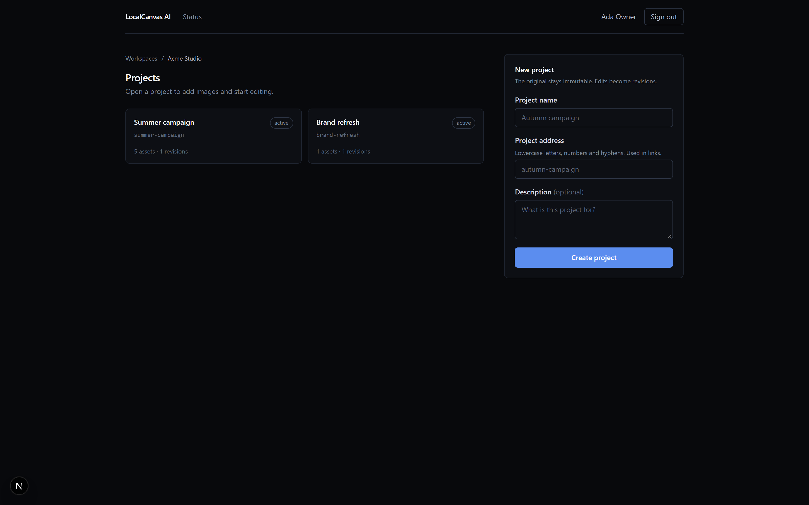
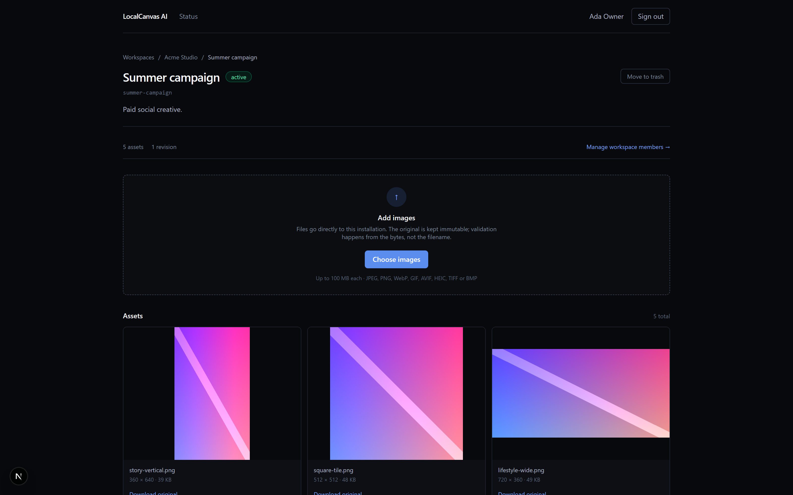
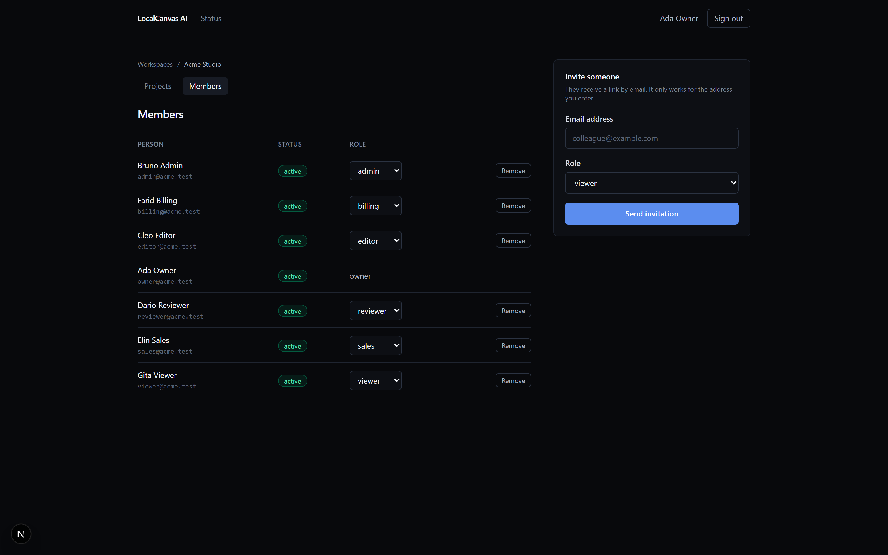
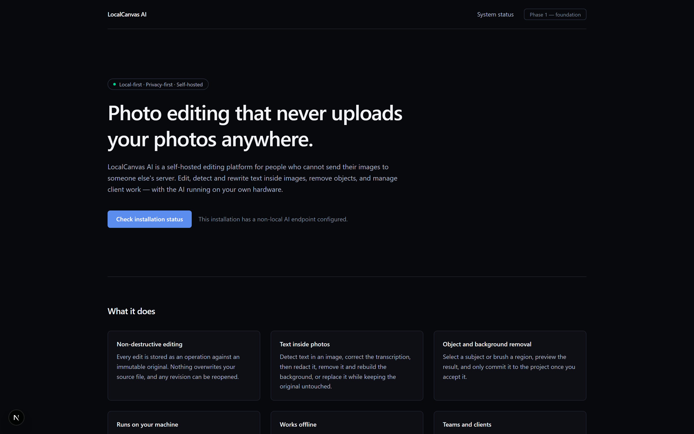
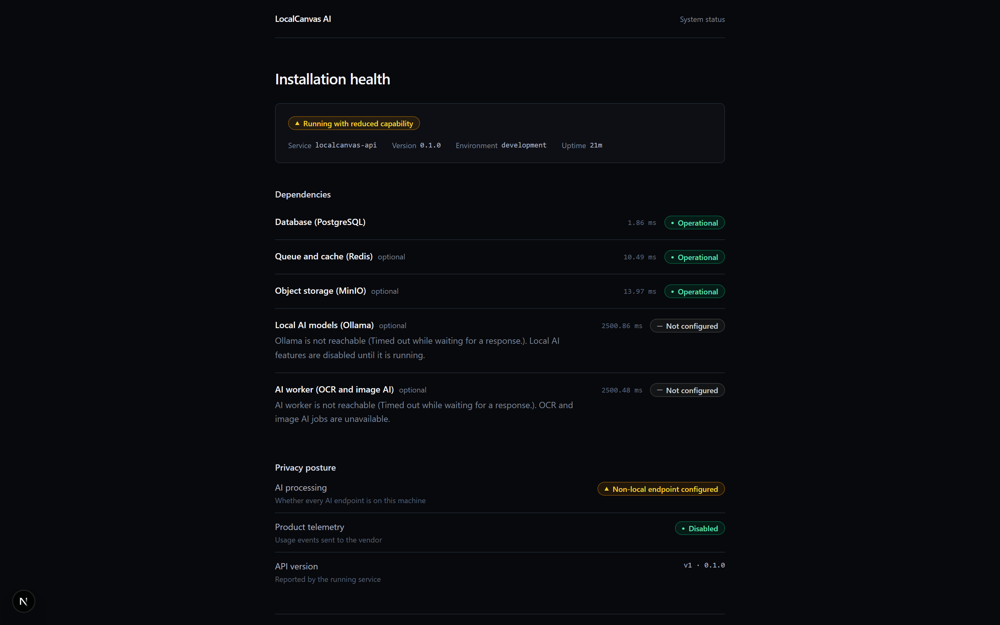

Photo editing that never uploads your photos anywhere.
A self-hosted editing platform for people who cannot send their images to somebody else's server. Edit, detect and rewrite text inside images, remove objects, and manage client work — with the AI running on your own hardware.
The problem
Every AI photo editor asks you to trust somebody else
The AI features people actually want — removing an object, reading the text baked into a photograph, replacing it — all require sending your image to a server you do not own. For a lot of people that is a deal-breaker: law firms, clinics, agencies under NDA, anyone handling client material, anyone in a jurisdiction with data-residency rules.
LocalCanvas AI runs entirely on your own machine, in Docker. Your files, your prompts and your project data are not transmitted anywhere. There is no cloud AI provider in the default path.
The differentiator is text inside images. Not OCR that merely reads it — the ability to detect text in a photograph, then correct it, redact it, remove it or replace it, non-destructively. That is a job people currently do badly in Photoshop and would rather not do at all.
Status
What works today
Three phases of eleven are built and verified. The remaining work is stated as plainly as the finished work.
| Layer | State |
|---|---|
| Monorepo, strict TypeScript, lint, hooks, CI | Working |
| PostgreSQL schema, migrations, deterministic seed | Working |
| Typed configuration with production guards | Working |
| Fastify API: redaction, security headers, rate limiting, OpenAPI | Working |
| Authorization: 27 permissions, 8 roles, enforced server-side | Working |
| Identity: sessions, lockout, password reset, privilege epochs | Working |
| Multi-tenant isolation — proven, not asserted | Working |
| Projects: CRUD, revisions, trash and restore, pagination | Working |
| Storage: direct-to-MinIO uploads via presigned URLs | Working |
| Byte-level image validation and decompression-bomb defence | Working |
| Web application: auth, workspace, members, projects, upload panel | Working |
| Python AI worker with a capability registry | Working |
| The photo editor | Phase 4 |
| OCRed, editable text inside images | Phase 5 |
| Object removal | Blocked on a licence question |
The product
Real pages, real data, running locally
Captured by a scripted browser session against a live Docker stack. The asset thumbnails are streamed from the object store through presigned URLs, so this is the product serving its own data — not a design mockup.


360 × 640,
512 × 512, 720 × 360
— were parsed out of the PNG headers server-side. The client never
supplied them, and would not be believed if it had.



Not configured, and the overall state is
Running with reduced capability. An application
that says so in public is why the "not started" rows above can be believed.
Architecture
A modular monolith with a hard boundary around the models
flowchart LR
Browser[Browser] -->|HTTP| Web[Next.js 16 web app]
Web -->|"server-side fetch,
session in an httpOnly cookie"| API[Fastify API]
API --> DB[(PostgreSQL 18)]
API --> Redis[(Redis)]
API --> MinIO[(MinIO / S3)]
API --> Worker[Python AI worker]
Worker --> Ollama[Ollama]
Browser -.->|"presigned PUT / GET
image bytes bypass the API"| MinIO
Holds no business rules
The web app talks only to the API. Authorization, validation and every state transition live behind it, so a second client cannot bypass them.
Owns every state transition
Fastify with zod-validated contracts shared across runtimes, so a contract change is a compile-time error rather than a runtime surprise.
Never exposed to the browser
Runs inference and requires a shared secret on every request. Its HTTP client is explicitly configured not to honour HTTP_PROXY.
Bytes never transit the API
The API mints presigned URLs; the browser uploads directly. Large uploads stay off the application server's heap without giving up server-side validation.
Engineering
The parts that were harder than they look
Privacy enforced by architecture, not policy
The worker's HTTP client is explicitly configured not to honour
HTTP_PROXY — an ambient proxy would otherwise route a
request intended for loopback Ollama off the machine. A real bug, found
by a test, and exactly the kind of thing a "nothing leaves this machine"
claim dies from.
Images validated by reading their bytes
Not by trusting Content-Type. PNG, JPEG, GIF, WebP, BMP,
AVIF, HEIC, TIFF and SVG are identified from their magic numbers, and
dimensions come from the headers. A file claiming to be a PNG and
containing HTML is rejected with a readable reason.
Bombs refused before allocation
Validation is header-only, with per-side and total-pixel ceilings, so a
file declaring 50000 × 50000 is rejected
without anything being allocated for it.
Tenant isolation proven, not asserted
Every workspace-scoped endpoint has a cross-tenant denial case, and foreign-workspace responses are asserted byte-identical to not-found responses. The API cannot be used as an existence oracle. Revoking another user's session returns 404, not 403.
Object keys scoped as a security control
Keys are ws/<workspaceId>/..., so a presigned URL
minted for one tenant cannot address another tenant's object even if the
key were guessed. There is a function that asserts exactly that.
Bugs only the real dependency could find
The integration suite ran green against a fake storage layer, and then a real MinIO run surfaced problems the fake could not: a rejected upload left its bytes in the bucket, and downloads served the client's declared content type rather than the detected one. The fake proves the wiring; the real run proves the behaviour.
Limitations
What this does not do yet
A portfolio page that only lists strengths is a sales page. These are the real gaps, including one that is blocked on a legal question rather than an engineering one.
| Limitation | Why |
|---|---|
| No photo editor yet | Scheduled as Phase 4; the storage and revision layer it needs is already built |
| No text detection or editing inside images yet | Phase 5 — the differentiator, and deliberately not started before the editor exists |
| Object removal is blocked | The inpainting weights it depends on carry no licence statement and are widely reported as non-commercial. Rather than ship it and hope, the adapter is registered as permanently blocked in the worker's capability registry, the reason is surfaced to the operator, and a test asserts it can never report as available. |
| Two-factor authentication is not shipped | Blocked on sequencing, not on difficulty |
| The project licence is undecided | An owner decision still open |
Technology
What it is built from
| Layer | Stack |
|---|---|
| Web | Next.js 16 (App Router, Turbopack), React 19, TypeScript 6 |
| API | Fastify 5 with zod-validated contracts |
| Data | PostgreSQL 18 with Prisma 7 |
| Cache and queues | Redis |
| Object storage | MinIO (S3-compatible), presigned direct uploads |
| AI worker | Python, FastAPI, Ollama |
| Auth | Argon2id, server-side sessions, privilege epochs, server-enforced RBAC |
| Testing | Vitest, pytest, a custom runtime HTTP harness |
| CI | GitHub Actions — lint, typecheck, tests, build, compose validation, licence scan |